Adobe Summit 2026
Product & Feature Announcements
What we'll cover
Summit 2026 in one slide
Five things that matter for VILT
-
Experience Cloud is now "CX Enterprise"
not just a rebrand; an agentic architecture unification on top of AEP, with new "Intelligence" services (Brand, Engagement) and a "Coworker" agent tier.
-
Coworker = new class of AI agent
persistent, multi-agent, goal-driven, co-built with NVIDIA (OpenShell runtime). Positioned above single-purpose agents.
-
Agent economy shipped, not just announced
10+ purpose-built agents now GA under credit-based pricing; Marketing Agent distributed into Microsoft 365 Copilot (GA) and Claude/ChatGPT/Gemini/watsonx/Amazon Q (Beta).
-
VILT services pressure is real and concentrated
Migration Assessment Agent, Commerce Developer Agent Suite, Agentic Authoring in AEM, and GenStudio Content Marketing each displace specific SOW categories (detailed in per-slide cons).
-
Most differentiators are Preview → H2 2026 GA
but POCs are scopable now. Credit-based pricing, AEP prerequisites, and brand-data maturity are the three gates customers must pass.
Four terms you need to know
Before we dive in
Coworker — A persistent, goal-driven multi-agent orchestrator that monitors signals, decides next-best actions, and executes across channels. Example: CX Enterprise Coworker (NVIDIA-co-built runtime). Positioned above individual agents.
Agent — A single-purpose specialist invoked for a bounded task. Examples: Journey Agent (AJO), Workflow Optimization Agent (Workfront), Site Optimization Agent, Migration Assessment Agent. Can be composed by a Coworker.
Skill — A reusable instruction package (prompt + tool bindings + constraints) composable into agents. Published in the Agent Skills Catalog. Lets VILT package expertise as callable units.
MCP Server — Anthropic's Model Context Protocol. Adobe products (AEP, Commerce, Marketo, JO, AEM) now expose native MCP servers so external agents — Claude, ChatGPT, Copilot, Gemini — can securely operate on Adobe data/actions.
Chapter 1
Cross-Product AI Platform & Agent Orchestration
9 features covered
Adobe CX Enterprise (umbrella — formerly Adobe Experience Cloud)
Adobe CX Enterprise (platform rebrand of Experience Cloud)
Adobe has rebranded Experience Cloud as Adobe CX Enterprise — an end-to-end agentic AI system unifying AI agents, reusable skills, MCP endpoints, intelligence (Brand + Engagement), and governance on top of Experience Platform. Organized around three pillars: Brand Visibility, Customer Engagement, and Content Supply Chain — replacing the legacy app-centric stack narrative.
news.adobe.com/news/2026/04/adobe-redefines-custome-experienceSummit 2026 CX Enterprise launch hero
- Clean narrative for C-suite — Single agentic umbrella simplifies selling into CMO/CIO strategy conversations vs. fragmented Experience Cloud pitch.
- Forces a platform re-baseline — Every legacy client gets a reason to re-open the architecture conversation; VILT can lead roadmap workshops.
- MCP-first positioning — Adobe now publicly commits to open agent interop (AWS, Anthropic, Google, Microsoft, NVIDIA, OpenAI), reducing lock-in objections.
Adobe CX Enterprise Coworker
Adobe CX Enterprise Coworker
CX Enterprise Coworker is a persistent, self-learning "teammate-class" multi-agent orchestrator. It monitors signals, recommends next-best actions, and executes multi-step work across Real-Time CDP, Journey Optimizer, and Customer Journey Analytics toward defined business goals. Built jointly with NVIDIA using the NVIDIA Agent Toolkit and the NVIDIA OpenShell secure runtime for regulated industries.
news.adobe.com/news/2026/04/adobe-unveils-cx-enterprise-coworkerCX Enterprise Coworker keynote reveal
- Net-new deal category — "Coworker-class" tier opens a distinctly larger ARR conversation than single-purpose agents; VILT can anchor to goal-based SOWs.
- Regulated-industry story — NVIDIA OpenShell + Nemotron narrative unlocks FSI / healthcare / gov pitches previously blocked by governance objections.
- Goal → plan → execute loop — Implementation work is real: agent instruction design, KPI/signal mapping, human-in-the-loop gates, escalation policies.
Adobe Experience Platform Agent Orchestrator
Adobe Experience Platform Agent Orchestrator
Agent Orchestrator is the runtime and control-plane beneath CX Enterprise. It lets teams build, register, coordinate, and govern agents across Adobe and third-party ecosystems (AWS, Anthropic, Google, Microsoft, OpenAI) via MCP, with shared identity, observability, and policy. It is the plumbing that makes Coworker and the 10+ agents composable.
news.adobe.com/news/2026/04/adobe-redefines-custome-experienceAgent Orchestrator under CX Enterprise
- Foundation for custom agents — Customers can register and orchestrate their own agents alongside Adobe's; VILT sells design + build services on top.
- Centralized governance plane — One place to enforce who can do what across agents; a clean conversation with security/compliance stakeholders.
- A2A / MCP interop — Plugs into partner agent ecosystems instead of replacing them; eases multi-vendor enterprise realities.
Adobe Brand Intelligence
Adobe Brand Intelligence ("Brand Brain")
Brand Intelligence is a continuously-learning reasoning engine that captures brand signals — approvals, rejections, annotations, review-cycle feedback — and converts them into a machine-readable brand understanding that Adobe (and third-party) agents consume during content production. Announced partner: Xfinity. Covered by press as "Brand Brain."
news.adobe.com/news/2026/04/adobe-introduces-brand-intelligence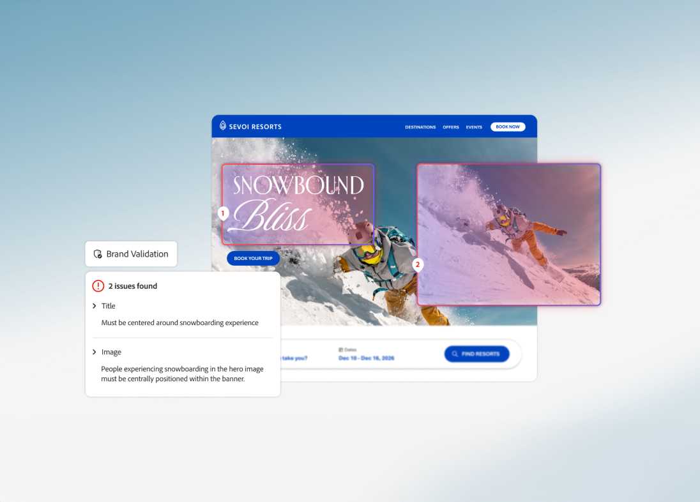
Brand Intelligence on-brand campaign demo
- Turns brand guidelines into a living system — Moves from static PDFs to an evolving model; opens brand-ops service lines (signal curation, reviewer training).
- Grounds every agent on-brand — Reduces hallucination risk that blocks enterprise GenAI adoption; strong answer to legal/brand objections.
- Natural fit with GenStudio, AEM, Commerce — Every content-producing surface can pull from the same brand model; cross-product leverage.
Adobe Engagement Intelligence
Adobe Engagement Intelligence
Engagement Intelligence is a decisioning engine optimized for customer lifetime value (CLV) rather than click-through. It powers personalization at scale by selecting next-best actions, offers, and journeys against long-horizon value signals. Pairs with Real-Time CDP (unstructured + structured profiles) and Journey Optimizer to close the end-to-end decisioning loop.
news.adobe.com/news/2026/04/adobe-unveils-cx-enterprise-coworkerEngagement Intelligence — CLV decisioning
- CLV framing resonates with CFOs — Moves decisioning conversation from CTR to value per customer; easier to justify platform spend.
- Complements Journey Optimizer — JO picks the send; Engagement Intelligence picks the what and to whom. Cross-product discovery work for VILT.
- Feeds Coworker goal loops — Becomes the KPI telemetry for Coworker, enabling closed-loop optimization engagements.
Adobe Marketing Agent (distribution expansion)
Adobe Marketing Agent — Expanded Distribution
Adobe's Marketing Agent — which queries Adobe data and drives tasks via MCP — is now Generally Available inside Microsoft 365 Copilot and in Beta across Anthropic Claude Enterprise, ChatGPT Enterprise, Google Gemini Enterprise, IBM watsonx Orchestrate, and Amazon Q. A direct response to enterprise buyers who want Adobe insight inside the AI assistant they already standardized on.
news.adobe.com/news/2026/04/adobe-expands-partner-ecosystemMarketing Agent across Copilot, Claude, ChatGPT, Gemini
- Unblocks "we standardized on Copilot" objections — Marketing Agent now lives where the user is; a direct answer to every "why switch tools" pushback.
- Simple demo, high perceived value — "Ask Copilot for last week's campaign results" lands in a first call; fast path to discovery.
- Drives AEP consumption — Every query lights up AEP profile / CJA lookups, expanding data footprint clients will need configured.
Agent Skills Catalog & CX Enterprise Developer Tools
Agent Skills Catalog + CX Enterprise Developer Tools
The Agent Skills Catalog is a library of reusable instruction packages (e.g., "review performance metrics," "orchestrate a journey") that agents can execute and that customers can extend with org-specific context. CX Enterprise Developer Tools expose agentic skills, MCP servers, and infrastructure so partners build custom agents that plug into the Orchestrator cleanly.
news.adobe.com/news/2026/04/adobe-redefines-custome-experienceSkills + Developer Tools under CX Enterprise
- Concrete partner / developer surface — Gives VILT a productized place to ship reusable skills for clients and for the marketplace.
- Accelerates POC velocity — Starting from pre-built skills cuts agent build time from weeks to days; compresses sell-build-show loop.
- Marketplace play — First-mover VILT skills (e.g., insurance-specific journey orchestration) become referenceable IP.
Adobe Purpose-Built Agents (GA cohort)
10+ Purpose-Built Agents GA (credit-based pricing)
Ten+ purpose-built agents graduate to GA under a unified credit-based pricing model with 1,770+ customers entitled: Site Optimization, Audience, Journey Orchestration, Experimentation, Content Optimization, LLM Optimization, Data Insights, Experience Modernization (Edge Delivery migration), and Experience Production. Each is a narrow, domain-tuned agent — not a general assistant — callable via Orchestrator or natively in the owning product.
news.adobe.com/news/2026/04/adobe-redefines-custome-experienceTen+ agents graduate to GA on credits
- GA = procurement ready — These are now buyable today, not vaporware; unlocks real pipeline conversations.
- Broad entitlement base — 1,770+ customers already entitled; large installed base for expansion + upsell plays.
- Each agent is a discovery hook — Any one of the 10+ becomes an "on-ramp" POC; VILT packages a standard 30-day demo kit per agent.
Adobe + NVIDIA (Firefly / GenStudio 3D Digital Twin; NVIDIA OpenShell runtime for Coworker)
NVIDIA Partnership — 3D Digital Twin + OpenShell Runtime
Two-part NVIDIA deal: (1) 3D Digital Twin — high-fidelity 3D product replicas generated via Firefly/GenStudio for rich product storytelling and simulation; (2) NVIDIA OpenShell secure runtime + NVIDIA Nemotron open models powering CX Enterprise Coworker, positioned for regulated industries (healthcare, FSI, gov) with strict data-residency/governance needs.
news.adobe.com/news/2026/04/adobe-expands-partner-ecosystemShantanu + Jensen fireside — 3D twin + OpenShell
- Opens regulated-industry doors — OpenShell + on-prem / sovereign compute answers long-standing objections for FSI/health/gov agentic AI adoption.
- 3D twin → commerce/PDP flywheel — Couples to Agentic Commerce PDP enrichment; rich 3D assets become automatically consumable by shopping agents.
- Jensen stage moment — Summit keynote co-presence signals tier-1 partnership; clients will ask about it in every call through Q3.
Chapter 2
Adobe Experience Platform & Real-Time CDP
4 features covered
Adobe Real-Time CDP (Unstructured Data Profiles)
Real-Time CDP — Unstructured Data Profiles
Real-Time CDP profiles now harmonize unstructured data — call-center transcripts, chat logs, video, audio — with structured profile data via vector embeddings. Agents and decisioning engines can reason over the full customer context, not just event streams and CRM fields. Closes the biggest gap between AEP and signals marketers care about.
news.adobe.com/news/2026/04/adobe-unveils-cx-enterprise-coworker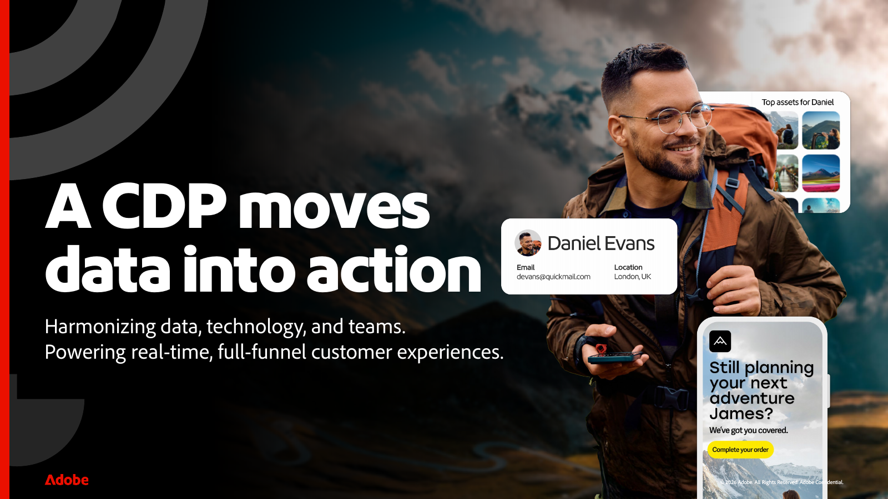
RT-CDP moves data — and now unstructured signals — into action
- Unlocks voice-of-customer at decisioning time — Call transcripts and chat logs now influence next-best-action in real time; a genuinely new capability class.
- Net-new ingestion + vector-ops services — Embedding pipelines, chunk strategy, retention/governance; all billable VILT work.
- Strengthens Coworker + Engagement Intelligence — More signal → better agent decisions; sells the full agentic stack.
Adobe Real-Time CDP Collaboration (three SKUs)
CDP Collaboration Expansion (Agencies, Media Networks, Universal GA)
Three expansions to Real-Time CDP Collaboration: (1) Universal Collaboration GA — invite any brand/publisher/partner with zero-license requirement on the invited side; (2) Agencies SKU — agencies operate clean rooms on behalf of clients, including a Publicis/Epsilon COREid bidirectional integration; (3) Media Networks & Publishers — audience, measurement, and generative-creative unified for retail/publisher networks.
business.adobe.com/blog/adobe-expands-offerings-for-data-collaborationUniversal + Agency + Media Network clean-room SKUs
- Kills the license-friction objection — Inviting a partner no longer requires them to buy Adobe; massively expands the addressable clean-room use-case pool.
- Agency SKU opens a distinct buyer — Agencies are now direct buyers of a CDP SKU; changes the sales motion and opens new logos.
- Publicis / COREid integration is a reference — Concrete named partnership de-risks the story.
Adobe Experience Platform — zero-copy federation
AEP Zero-Copy Integrations (Snowflake, BigQuery, Databricks)
AEP extends zero-copy federation to the three major cloud warehouses: Snowflake, Google BigQuery, and Databricks (Delta Sharing, announced jointly with Databricks at Summit). Profiles and audiences can be built against warehouse data in place — no copy into AEP — and Databricks Genie MCP integrates with Agent Orchestrator for agentic marketing workflows grounded in warehouse data.
experienceleague.adobe.com/en/docs/experience-platform/sources/connectors/databases/databricks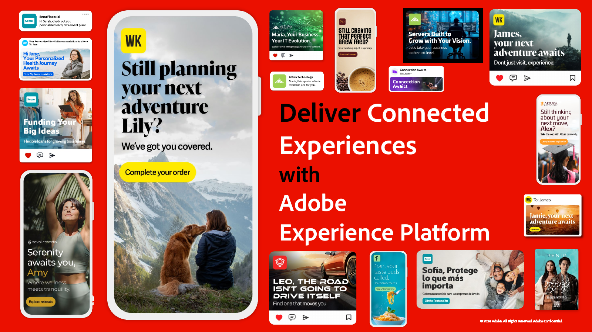
AEP — connected experiences across data platforms
- Kills the "AEP is another data silo" objection — Data-platform teams love zero-copy; unlocks AEP deals previously blocked by CDO pushback.
- Architect-level selling point — Clean narrative for IT: leave data where it is, operationalize via AEP.
- Databricks MCP is net-new — Genie MCP → Agent Orchestrator enables agents that reason over warehouse data live; a differentiated demo.
Marketo Engage Data Streams into AEP
AEP Data Streams for Marketo Engage (batch → real-time)
Marketo Engage event data — lead actions, form fills, scoring changes, activity interactions — now streams into AEP in real time instead of the legacy batch sync. Triggers journeys, enriches profiles, and feeds decisioning/agents the instant the event happens. Built for high-volume, low-latency B2B use cases that batch could never support.
business.adobe.com/summit/2026/sessions/from-batch-to-real-time-what-you-can-do-with-marke-os220.html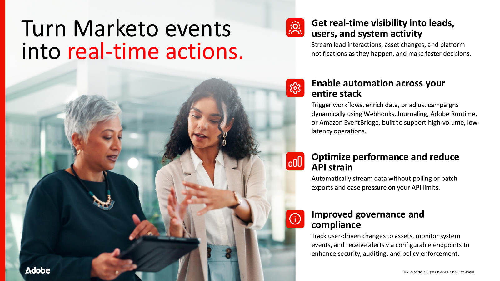
Marketo events → real-time actions across the stack
- Kills the "Marketo is batch" criticism — A long-standing complaint from RevOps is now answered; unlocks real-time B2B journeys.
- Multiple downstream consumers — Webhooks, AEP, AJO, Amazon EventBridge are all called out as targets; broad architecture value.
- Reduces polling/API-strain patterns — Customers previously polled Marketo APIs; streaming replaces that and removes an operational headache.
Chapter 3
Adobe Experience Manager
6 features covered
Adobe Experience Manager Assets
AEM Assets — Agentic DAM
AEM Assets is rebuilt around agents that reason over brand guidelines, rights, taxonomy, and product context. Three pillars: make it conversational (intent-aware search, enrichment, recommendations), safe (unified metadata, permissions, provenance), and count (activate content across channels). DAM shifts from "system of record" to system of action and control.
business.adobe.com/blog/agentic-dam-adobe-experience-manager-assets-adobe-summit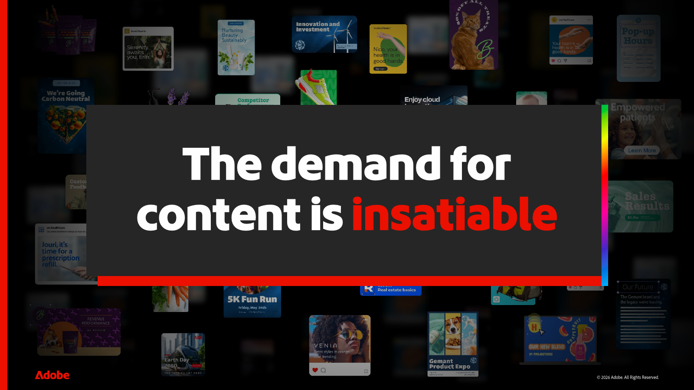
Adobe's "Context Layer" model for Agentic DAM
- DAM evaluation reset — Adobe's five "agentic DAM" criteria (multi-source, reasoning, dynamic metadata, agentic workflows, MarTech fan-out) become a ready-made RFP teardown for competing DAMs.
- New migration scopes — "DAM comes to you" integrations (into Office, Slack, authoring tools) open fresh integration engagements beyond the core AEM console.
- Content supply chain leverage — Pairs with GenStudio + Firefly for creative-ops clients who already buy from VILT.
Adobe Experience Manager Sites
AEM Sites — Three New AI Agents
Three new agents ship inside AEM Sites: Brand Experience Agent creates/updates pages and modernizes legacy sites for AI discovery; Content Advisor Agent surfaces approved content for any channel on demand; Brand Governance Agent enforces policy, tracks asset rights, and manages permissions — so content stays on-brand for humans and agents.
news.adobe.com/news/2026/04/adobe-introduces-brand-visibility-solution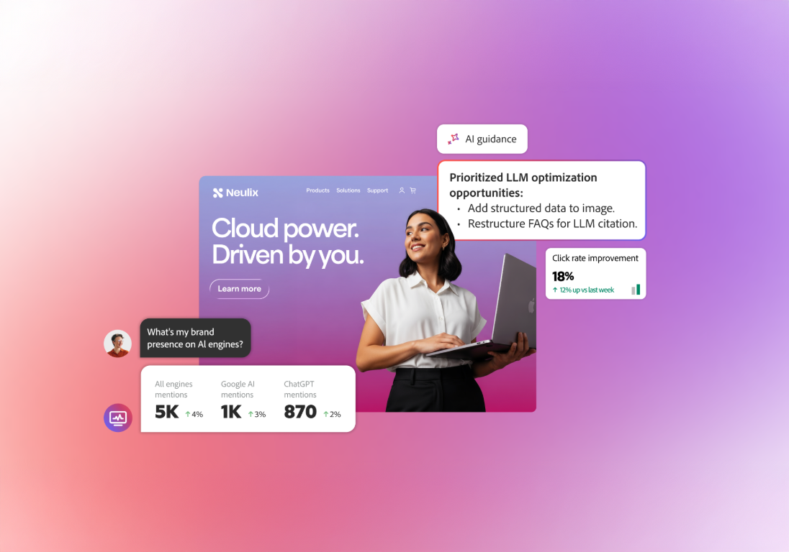
Adobe Brand Visibility solution hero imagery
- Credit-based, same entitlement — Part of the "10+ agents GA" package; customers already entitled get immediate access without new SKU negotiations.
- Governance story sells to legal/brand — Brand Governance Agent is a concrete answer for the compliance stakeholders who usually block AI rollouts.
- Edge Delivery pull-through — Brand Experience Agent's legacy-modernization skill is a natural door-opener for EDS migration engagements.
Adobe Experience Manager (Sites + Assets platform layer)
AEM Contextual Layer for AI Agents + Agentic Authoring
A new AEM layer manages the "brand truth, permissions, governance, and content sources" that agents read before they act. Agentic Authoring opens AI-first editing to every employee responsible for brand visibility — not just power users — using the same context. It is the substrate under every Sites and Assets agent.
news.adobe.com/news/2026/04/adobe-introduces-brand-visibility-solutionContext, metadata, and insights layers powering agentic AEM
- Architecture-level selling point — Unlike a single agent, the context layer is the integration surface. Architects and enterprise architects engage here; services work is durable.
- Multi-tenant + multi-brand ready — Permissions and brand-truth modeling map cleanly to large enterprises with federated brand teams (financial services, CPG).
- Foundation for LLM Apps + Brand Concierge — Anything Adobe ships on the agent side depends on this layer. Early advisory work here compounds.
Adobe Experience Manager (LLM Apps capability)
LLM Apps inside AEM
"LLM Apps" is a new AEM capability letting brands build and deploy branded experiences that run inside LLM interfaces such as ChatGPT. Paired with Brand Concierge and LLM Optimizer, it turns agent surfaces into distribution channels — content goes where users search instead of waiting on owned-site traffic.
news.adobe.com/news/2026/04/adobe-introduces-brand-visibility-solutionBrand Visibility framing for LLM surfaces
- Addresses the declining-organic-traffic panic — Adobe cites 50% organic decline by 2028; this is the board-level talking point, and VILT gets to lead the conversation.
- Natural upsell with LLM Optimizer — Customers already piloting LLM Optimizer have an obvious "what do we put on those surfaces?" question LLM Apps answers.
- New POC category — Greenfield advisory scope: which brand experiences fit LLM surfaces, what interaction patterns, measurement strategy.
Adobe Experience Manager Forms
AEM Forms — AI Innovations for Lead Generation
AEM Forms gets agentic creation, discovery, and completion. Agentic Form Creation generates forms from a brief, image, or URL and adds business logic via prompt. Form Experience Builder extensions (import, create/update, business-logic skills) and RT-CDP connector enable AI-discoverable, personalized forms that feed AEP profiles for live journey triggers.
business.adobe.com/blog/introducing-agentic-innovations-adobe-experience-manager-formsBrand Visibility umbrella covering AEM Forms
- Compresses form-build timelines — Prompt-to-form replaces multi-day authoring for common lead-gen templates.
- Direct RT-CDP wiring — Form submissions flow to AEP profiles out-of-the-box, which is what B2B customers keep asking VILT to custom-build.
- Shared agent architecture with Sites — Per the AEM Forms blog, the "Brand Experience Agent" itself handles a forms creation job — same agent, new skill. Consistent authoring story for clients.
Adobe Experience Manager Guides (Cloud Service)
AEM Guides Updates (technical content at scale; IBM case)
AEM Guides as a Cloud Service continues to mature — microservices architecture, improved uptime, automated APIs for creation/tagging/publish, and DITA-source standardization. IBM proves the pattern: 1,000 authors, 20M pages, 20% faster editing, 50% reduced onboarding, 25% faster builds. Next phase: AI-assisted authoring, DITA-driven knowledge graphs, MCP-based RAG for support.
business.adobe.com/products/experience-manager/guides.html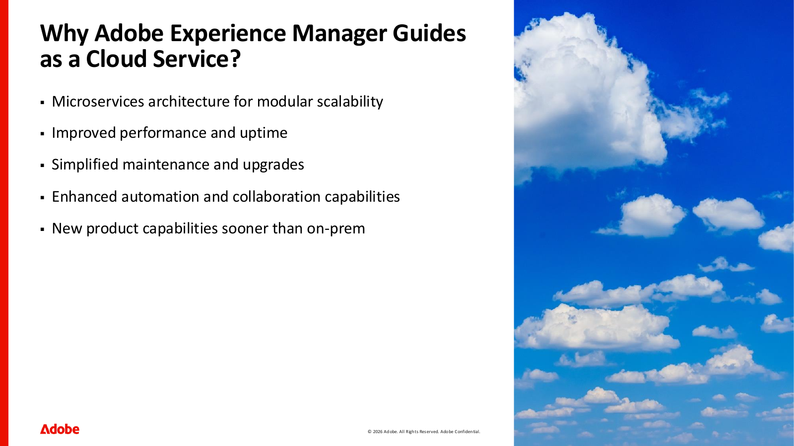
IBM metrics — 20%/50%/25% improvements on AEM Guides
- Proof-point quality — IBM's scale and metrics are a credible reference for any tech-doc customer evaluating Guides vs. MadCap / Paligo / custom DITA CCMS.
- Agentic adjacency story — Guides feeds the AEM context layer with structured DITA — clean input for RAG and future agents on support and self-service.
- Migration-practice fit — Custom DITA-type consolidation, conversion pipelines, Word template design — exactly the services VILT can deliver or broker.
Chapter 4
Adobe Journey Optimizer
5 features covered
Adobe Journey Optimizer — Loyalty
Adobe Journey Optimizer Loyalty
A new AI-first loyalty capability in AJO. A loyalty agent analyzes tier, transaction, and engagement signals in real time; an Intelligent Challenger Builder designs gamified, behaviour-adaptive challenges. It is explicitly layered on top of existing loyalty platforms (points, tiers, rewards) rather than replacing them — Adobe orchestrates the experience, the incumbent manages the ledger.
business.adobe.com/blog/introducing-adobe-journey-optimizer-loyalty
AJO Loyalty within CX Enterprise Coworker framing
- No loyalty-platform rip-and-replace — Integrates with existing engines (Salesforce, custom, etc.). Big objection remover for customers who just spent $$ on a loyalty ledger.
- New SKU, new deal size — Net-new packaging creates a quota line VILT can sell against, not just implementation hours on an existing product.
- Gamification is implementation-heavy — Challenger Builder setup, signal mapping, reward-rule modeling are all services scopes.
Adobe Journey Optimizer — Journey Agent
Journey Agent (ideation, generation, simulation)
Journey Agent is the inline/embedded agentic layer in AJO covering ideation, generation, simulation, monitoring, and optimization of journeys. Per 2026 release notes, NL-prompt journey creation is live. Summit 2026 expands it with new skills, embedded workflows, B2B callable-agent capability, and integration with external agents (chat, Smart Campaign callouts).
business.adobe.com/uk/blog/innovations-adobe-journey-optimizer-adobe-summit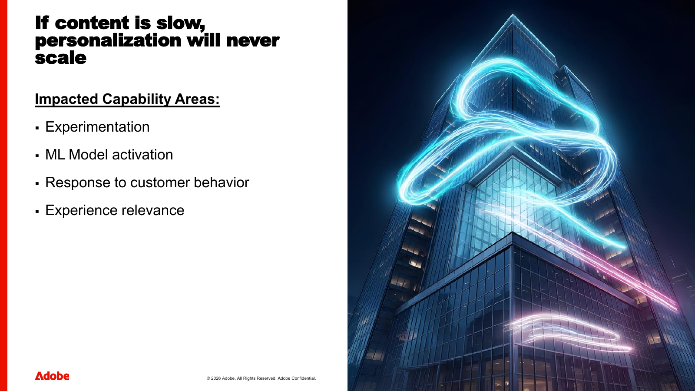
AJO with AI-assisted journey design (Interbank)
- Already shipped — Unlike many Summit announcements, this has production release notes dating to Jan 2026. Customers can actually adopt.
- Smart Campaign + Marketo bridge — Callable-agent pattern lets B2B customers chain Marketo Smart Campaigns into AJO Journey Agent skills — a real integration story.
- Lowers journey-design barrier — NL interface reduces the skill gate on AJO, expanding user base without extra licence.
Adobe Journey Optimizer — Headless alerting/optimization
Autonomous Alerting & Optimization + Journey Analysis
Headless agent workflows configured against specific monitoring thresholds that execute autonomously once conditions are met. Journey Analysis adds anomaly/conflict/health detection. Pre-configured journey alerts include Profile Discard Rate Exceeded, Custom Action Error Rate Exceeded, and Profile Error Rate Exceeded — effectively AIOps for customer journeys.
business.adobe.com/uk/blog/innovations-adobe-journey-optimizer-adobe-summit
Autonomous agent workflows inside CX Enterprise
- Shift-left on journey failures — Catches profile-discard and custom-action errors before a CX Ops analyst files a ticket. Strong ops-maturity story.
- Headless pattern is composable — Workflows can trigger beyond AJO (webhooks, callable skills). Foundation for broader automation engagements.
- Observability scope — Adds a discrete MSP/managed-ops service offering VILT can productize.
Adobe Journey Optimizer — MCP Server
Journey Optimizer MCP Server
A native Model Context Protocol server exposing AJO capabilities (journey creation, profile inspection, decisioning, activation) to external AI platforms — Claude Enterprise, ChatGPT Enterprise, Gemini Enterprise, Copilot, watsonx Orchestrate. Part of Adobe's broader MCP-everywhere pattern (Marketo, Commerce also ship MCP servers at Summit 2026).
business.adobe.com/uk/blog/innovations-adobe-journey-optimizer-adobe-summit
MCP surfaces for Journey Optimizer
- Agent-to-agent narrative unlocks — Customers who want Copilot or Claude to operate on AJO data now have a supported path, not custom REST glue.
- Open standards — MCP + A2A adoption reduces lock-in fear in procurement.
- New POC category — "Hook Copilot to AJO" is a concrete, scoped engagement for any enterprise with Microsoft 365 footprint.
Adobe Journey Optimizer B2B Edition
AJO B2B — Prime tier (new) + Ultimate (rebrand) + Semantic AI Decisioni…
AJO B2B splits into two SKUs. Prime (new, Q2 2026 GA) uses Marketo Engage data — lower entry bar, no RT-CDP B2B required. Ultimate (existing product, rebranded) stays the advanced tier with RT-CDP B2B. Both tiers gain Semantic AI Decisioning (next-journey / next-step recs) and Sales Qualifier — an AI BDR tool with assistive and autonomous (agentic) modes for qualification, outreach, and next-step decisioning.
business.adobe.com/products/journey-optimizer-b2b-edition.htmlAJO journey authoring canvas — representative B2B context
- Clear maturity path to sell — Marketo Engage → AJO B2B Prime → AJO B2B Ultimate (with RT-CDP B2B). Each step is a VILT engagement; upgrade velocity is real revenue.
- Prime removes the AEP B2B gate — Marketo customers can now buy AJO B2B without a full RT-CDP B2B project first. Shorter time-to-value, broader addressable base.
- Sales Qualifier is concrete sales-team value — Agentic BDR mode is a demo that lands with revenue ops stakeholders, not just marketing.
Chapter 5
Marketo Engage
5 features covered
Adobe Marketo Engage
Marketo Engage Conversational AI Layer
Marketo Engage is moving to a chat-first authoring model. A persistent conversational panel becomes the primary surface for program creation, campaign validation, smart list construction, lead import enrichment, and data normalization. Selecting a program sets context, so natural-language commands like "QA this program" resolve without picking menus.
business.adobe.com/uk/blog/agentic-ai-redefining-user-experience-marketing-opsChat panel as primary authoring surface in Marketo Engage
- Onboarding delta collapses — Net-new Marketo admins stop needing 6–8 weeks of classroom time to be useful; agent-grounded AI assistant cites Adobe docs inline.
- Smart-list audit velocity — Validation flows that used to require a senior MOPs consultant now surface misconfigured filters in seconds, good for managed-services QA rhythms.
- Chat-first matches CX Enterprise pattern — Same mental model customers already see in AEM and Commerce; reduces training spread across stack.
Adobe Marketo Engage
Marketo MCP Server
Native Model Context Protocol server exposing Marketo Engage as a secure toolset to external AI systems — Claude Enterprise, Microsoft Copilot, ChatGPT Enterprise, Gemini Enterprise, watsonx Orchestrate. External agents can browse folders, create programs, trigger campaigns, read smart lists, and perform admin tasks through a permissioned, auditable interface.
business.adobe.com/uk/blog/agentic-ai-redefining-user-experience-marketing-opsMarketo MCP surface — external agents operate on Marketo instance
- Unblocks "one chat, multiple tools" clients — Customers already standardized on Copilot or Claude Enterprise can reach Marketo without bespoke connectors; a real differentiator versus HubSpot/Salesforce MCP maturity.
- New integration surface for VILT — MCP skill packaging (auth scopes, tool definitions, red-team testing) is a net-new workstream; fits security-conscious enterprises.
- Reduces point-to-point ETL demand — Agents pull data on demand; fewer "sync Marketo to X" projects over time.
Adobe Marketo Engage
All-New Marketo Engage Email Designer
Ground-up rebuild of the Marketo email authoring experience. Modern drag-and-drop canvas, modular content blocks, image-to-HTML converter, native Spam Detection, Dark Mode Preview, and built-in collaboration/review workflows. Adobe says the new designer is production-ready and includes migration from the legacy editor.
business.adobe.com/summit/2026/sessions/why-the-all-new-marketo-engage-email-designer-is-g-os219.htmlNew drag-and-drop email designer with modular content blocks
- Kills the "we use SFMC for email because Marketo's editor is ugly" objection — Specifically undermines Salesforce Marketing Cloud's last strong foothold in mixed-vendor B2B shops.
- Dark Mode Preview + Spam Detection built in — Replaces Litmus/Email on Acid for many mid-market clients; cost story lands well.
- Image-to-HTML converter — Designer hands a PNG, Marketo produces editable modular email; meaningful velocity for content teams without dedicated coders.
Adobe Journey Optimizer B2B Edition + Marketo Engage
Sales Qualifier (AI Lead Conversion)
AI agent that auto-qualifies, enriches, and prioritizes inbound leads for BDR/SDR handoff. Supports a custom workflow mode so each revenue team wires in its own qualification criteria, then the agent scores, tags, and routes leads in real time off signals from Marketo, AJO B2B, and the AEP profile.
news.adobe.com/news/2026/04/adobe-introduces-brand-intelligenceSales Qualifier — BDR-facing AI lead prioritization surface
- Replaces a category of purchased tooling — Qualified, 6sense tier-2 scoring, and manual BDR triage lists become partly redundant. Cost-displacement argument is strong.
- Custom workflow mode — Not a black-box scorer; revenue ops can encode their ICP logic and iterate, which is critical for enterprise trust.
- Packaged inside Marketo + AJO B2B — No separate integration project, unlike most AI scoring tools.
Adobe Marketo Engage + Adobe Experience Platform
Marketo Engage Data Streams (batch → real-time)
Replaces Marketo's batch API and bulk-export model with a real-time event stream. Marketo emits lead interactions, asset changes, and platform notifications as they happen; downstream systems (AEP, AJO, data warehouses, custom services) subscribe. API quota bottlenecks disappear; triggers fire off live events instead of scheduled pulls.
business.adobe.com/uk/blog/agentic-ai-redefining-user-experience-marketing-ops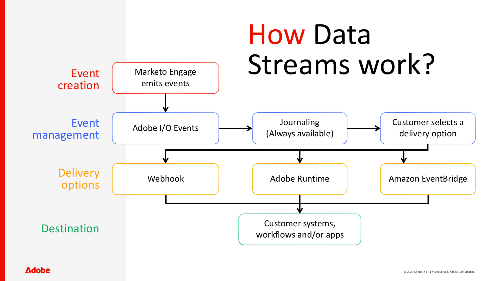
Marketo Data Streams event flow — emit, manage, deliver
- Kills the API-quota ceiling — Enterprise Marketo clients spend real SOW hours optimizing API usage; data streams eliminate the problem class.
- Unlocks AJO real-time triggers from Marketo events — Form fill in Marketo triggers a journey in AJO within seconds, not 15-minute batch windows. Architect-level sell.
- Cleaner warehouse feeds — Stream to Snowflake/BigQuery/Databricks via AEP zero-copy cuts ETL maintenance; pair with the AEP zero-copy slide.
Chapter 6
Adobe Commerce
5 features covered
Adobe Commerce
Brand Concierge — Native in Adobe Commerce
Adobe's Brand Concierge conversational UX, now native inside Adobe Commerce. Shoppers ask questions, compare products, get recommendations, track orders, and check out in a single chat surface governed by the merchant's catalog, rights, and brand rules. Plugs directly into Commerce cart, pricing, inventory, and identity without a bolt-on.
business.adobe.com/blog/adobe-commerce-summit-announcements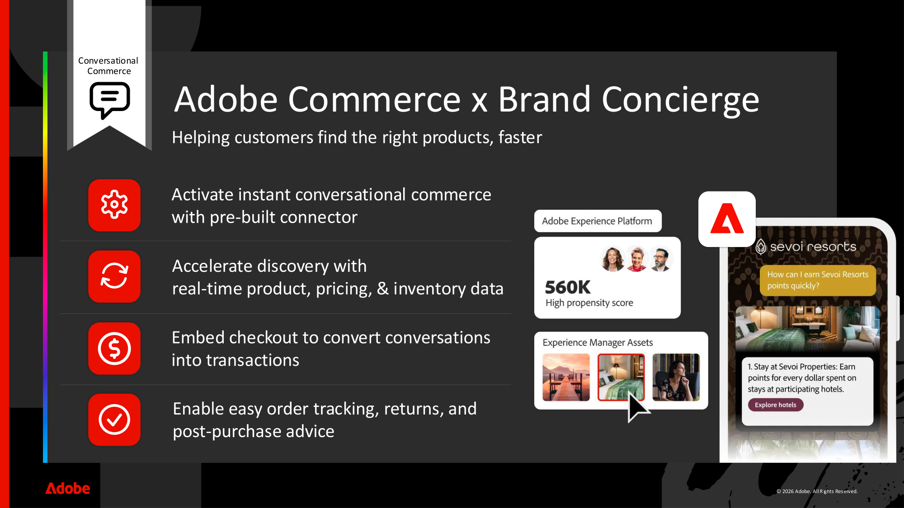
Brand Concierge conversational shopping UX inside Adobe Commerce
- No integration project required — Brand Concierge historically meant an AEM/GenStudio/Commerce stitch; native in Commerce removes that work and lands faster.
- Brand-governed — Draws on product catalog, rules, and approved content; not a generic GPT wrapper. Compliance/legal conversations are shorter.
- Shares a surface with agents — Same conversational pattern human shoppers use is exposed to external agents through the Storefront MCP (next slide), so merchants build once.
Adobe Commerce
Agentic Commerce Experiences — PDP Enrichment + Catalog AI + Agent Prot…
Three-part "commerce for agents" play. PDP Enrichment adds a hidden machine-readable semantic layer to product pages for LLM comprehension. Catalog AI Enrichment auto-rewrites names and descriptions with use cases, complements, and substitutes. Commerce adds support for Google's Universal Cart Protocol, PayPal's transaction protocol, and Agentic Commerce Protocol (ACP) so agents can transact.
business.adobe.com/blog/adobe-commerce-summit-announcements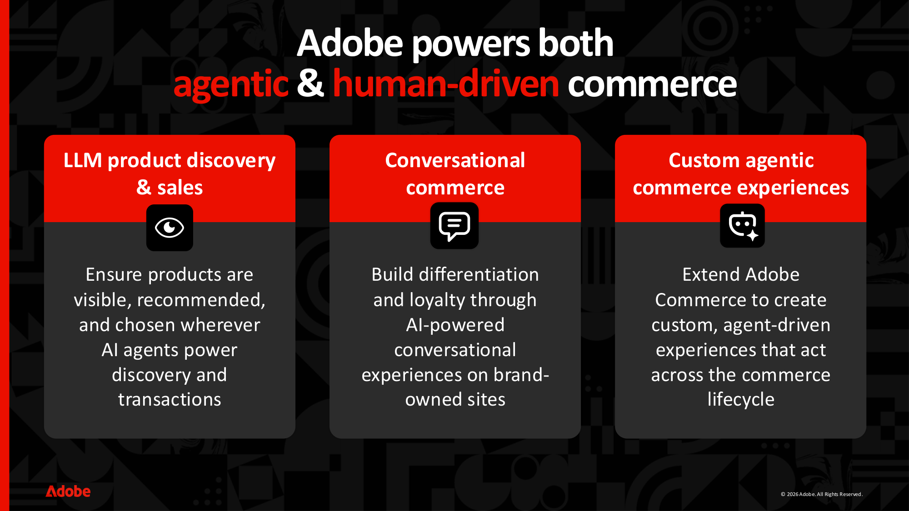
Adobe Commerce powers both human-driven and agentic commerce
- First-mover on agent protocols — Adobe is shipping Universal Cart and ACP support before most competitors have a position. Useful narrative against Shopify/BigCommerce in RFPs.
- Click-to-deploy PDP Enrichment — No frontend refactor; invisible to human shoppers. Low-risk enablement.
- Auto-rewrite at catalog scale — Catalog AI Enrichment handles the 50k-SKU problem in a week instead of a content-team quarter.
Adobe Commerce
Commerce Storefront MCP
Standardized MCP interface exposing Adobe Commerce primitives — catalog, pricing, inventory, promotions, cart, checkout, order management, post-purchase — to external AI agents and LLMs. Merchants build their own shopping assistants, voice agents, upsell bots, or plug into third-party ecosystems without custom API scaffolding each time.
business.adobe.com/blog/adobe-commerce-summit-announcements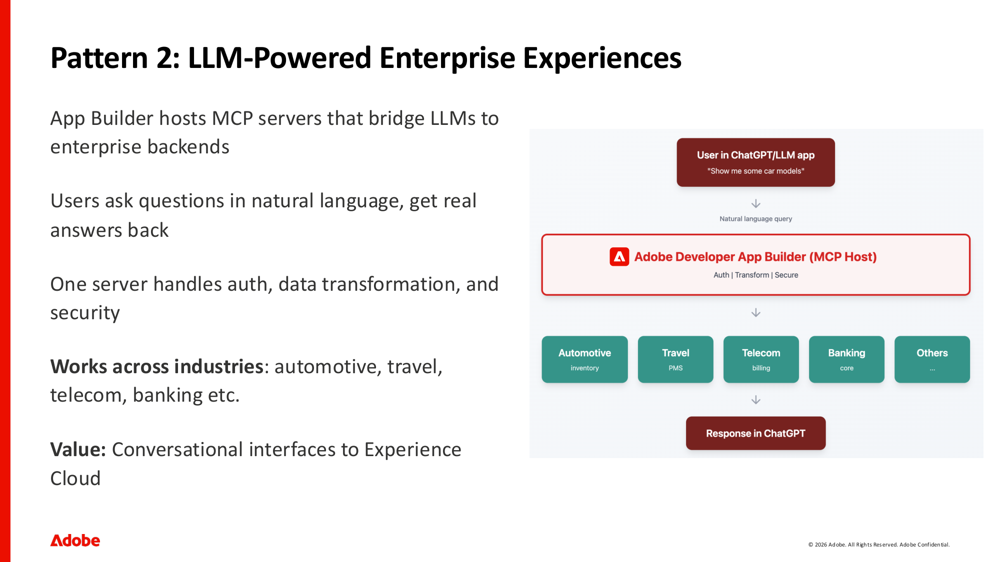
App Builder hosts MCP servers that bridge LLMs to Commerce
- Developer-loved — Standard MCP tool surface cuts integration hours 40–70% versus hand-rolled REST orchestration.
- LLM/IDE-agnostic — Works with Claude, Copilot, Gemini, and client-built agents. No vendor lock on the agent side.
- Foundation for Brand Concierge and external agents — Same interface, two consumers; reduces surface area.
Adobe Commerce + Adobe App Builder
Commerce Developer Agent Suite — App Builder MCP + Storefront Builder A…
An agentic developer suite for Commerce: Migration Assessment Agent scans legacy Magento On-Prem and produces module inventory, complexity scores, risk reports, readiness, and a developer handoff package. App Builder MCP generates production-ready code from natural language. Storefront Builder Agent automates Luma-to-Edge-Delivery template conversion, API mapping, and CSS migration. Plus an API-first incremental data migration framework.
business.adobe.com/blog/adobe-commerce-summit-announcements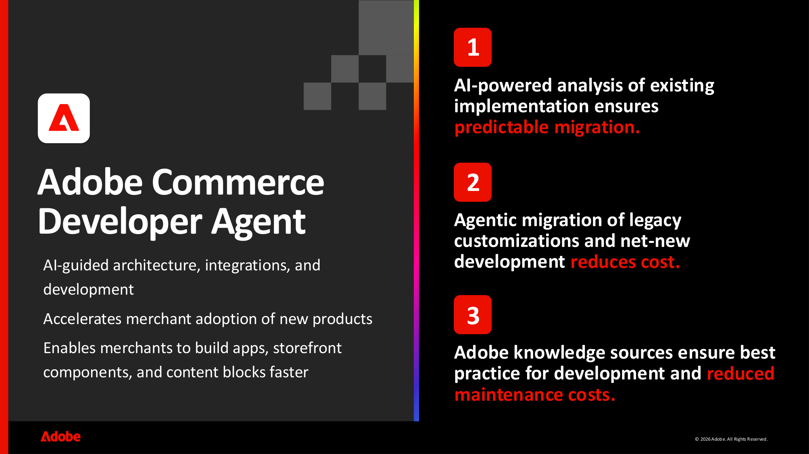
Adobe Commerce Developer Agent — AI-guided architecture and migration
- Discovery collapses from weeks to days — Migration Assessment Agent produces the artifacts VILT discovery teams currently hand-build over 3–6 weeks.
- Code generation inside App Builder sandbox — Isolated containers, encrypted credentials; safe to ship to enterprise clients without bespoke DevOps scaffolding.
- Incremental data migration — Replaces one-shot cutover pattern with near-real-time sync; customers love lower cutover risk.
Adobe Commerce
Commerce B2B Drop-In Components + B2B Starter Theme
Frontend-agnostic modular components for B2B commerce: Company Account Management, Negotiable Quotes, Requisition Lists, Purchase Orders. Paired with a B2B Starter Theme on Edge Delivery Services (launching April 26, 2026). H1 2026 adds Company Hierarchies, Seller-Assisted Buying, and Quick/Grid Ordering as drop-ins.
business.adobe.com/blog/adobe-commerce-summit-announcementsB2B drop-ins — Company Accounts, Negotiable Quotes, Requisition Lists
- Dated GA — April 26, 2026 for the Starter Theme is a rare firm date from Adobe; enables immediate pilot scoping.
- Frontend-agnostic drop-ins — Work with React, Vue, or Edge Delivery; no full-site rebuild required to add a B2B capability.
- Cuts B2B storefront build from quarters to weeks — Company Accounts and Negotiable Quotes were historically 6–12 week custom builds; now drop-in configuration.
Chapter 7
Adobe Workfront
2 features covered
Adobe Workfront
Workfront Workflow Optimization Agent
Agent that automates connected actions across Workfront planning, execution, review, and approval — and, critically, is assignable as a resource on project plans. A PM writes a natural-language brief; the agent translates it into a structured project with templates, priorities, budgets, tasks, and dependencies, and then executes assigned tasks like a teammate.
news.adobe.com/news/2026/04/adobe-introduces-brand-intelligenceAgents as assignable resources inside Workfront project plans
- "Agents as assignable resources" is the headline — Fundamental shift; no other major PM tool exposes agents as timeline-capable resources with defined instructions.
- Templated project creation from NL — PMO standardization becomes easier; every new campaign brief lands on the approved template automatically.
- Built-in review/approval automation — The agent can resolve issues or perform reviews within scoped permissions; eliminates a class of coordination tasks.
Adobe Workfront + GenStudio
Collaboration Agents in Workfront (Cross-Team Brief Creation)
Agents that span Workfront and GenStudio to facilitate cross-team campaign brief creation. They synthesize brief inputs, pull historical performance data, and orchestrate handoffs between marketing, creative, legal, and agency partners. Human-to-agent collaboration is treated as first-class, not assistive — agents participate in work, not just suggest.
news.adobe.com/news/2026/04/adobe-introduces-brand-intelligenceCollaboration agents — cross-team brief creation and orchestration
- Closes the Workfront ↔ GenStudio loop — Historical pain point; briefs now flow from intake through creative production without manual re-typing.
- Agency alignment angle — Pairs with GenStudio Agency System of Record; external partners see the same brief context.
- Creative production velocity — Cuts the "brief to first concepts" cycle meaningfully; clients report this as a top pain today.
Chapter 8
Analytics / CJA / CX Analytics
3 features covered
Adobe CX Analytics (rebrand + repositioning of Adobe Analytics + Customer Journey Analytics)
Adobe CX Analytics (new umbrella portfolio)
Adobe CX Analytics is the new umbrella for Adobe Analytics + Customer Journey Analytics — a unified, governed intelligence layer that connects journeys, content, and data across every touchpoint including LLM-powered surfaces. Adds Data Insights Agent, Proactive Insights, root-cause analysis, LLM conversation insights, and traffic measurement.
news.adobe.com/news/2026/04/adobe-unveils-cx-enterprise-coworkerCX Enterprise Coworker hero with unified intelligence layer.
- Unified metrics across journeys + content + data — single semantic model removes the endless stitching work between Analytics, CJA, and Content Analytics that clients currently pay services to glue.
- LLM surface coverage built in — measures traffic arriving from ChatGPT/Gemini/Perplexity natively; customers no longer need to build bespoke taggers to see "invisible journey" traffic.
- Feeds the Coworker decisioning loop — the same insights layer powers CX Enterprise Coworker's next-best-action recommendations, creating a coherent story for clients already evaluating Adobe's agentic stack.
Adobe Marketing Campaign Analytics + Adobe Content Analytics
Marketing Campaign Analytics + Content Analytics
Marketing Campaign Analytics adds updates and Content Analytics gains an omnichannel insights layer that pipes unified cross-channel performance signals into GenStudio for Performance Marketing dashboards. Closes the loop between what content was delivered, where it ran, and how it converted — now stitched across paid, owned, and LLM-ad surfaces.
news.adobe.com/news/2026/04/adobe-introduces-brand-intelligence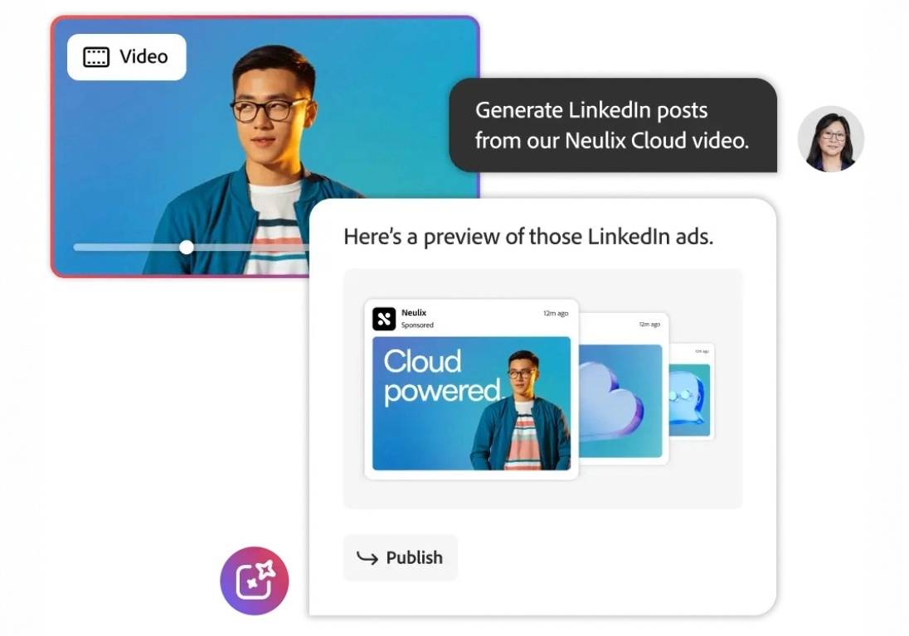
GenStudio PM dashboard — destination for refreshed insights.
- Direct pipeline into GenStudio PM — performance data now feeds creative-production decisions without middleware. Eliminates the "where does the data live" arguments common in joint Analytics + GenStudio deployments.
- Omnichannel includes the new channels — ChatGPT Ads and CTV performance roll up the same way as display/social, so clients don't need channel-specific reporting silos.
- Shortens GenStudio PM time-to-value — customers buying GenStudio PM today get insight surface turned on as part of the stack rather than as a separate CJA implementation.
Customer Journey Analytics — AI Search Analytics
CJA AI Search Analytics
A Customer Journey Analytics workspace and data-collection pattern for tracking "invisible journey" traffic — users who arrive on owned surfaces after starting in ChatGPT, Gemini, Perplexity, or Copilot. Presented at Summit 2026 Skill Exchange as a reference build; aligns with CX Analytics' LLM conversation insights direction.
experienceleague.adobe.com/en/docs/analytics-platform/using/cja-overview/cja-b2c-overview/cja-overview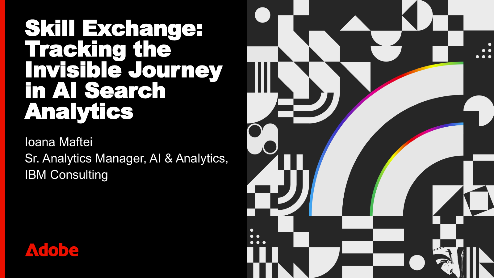
CJA reference workspace for AI-search referral analysis.
- Closes a board-level blind spot — CMOs are asking "how much traffic comes from ChatGPT?" and most customers have zero visibility. Reference build ships answer today without waiting for CX Analytics GA.
- Pure-play CJA implementation — no new SKU; extends what customers already own. Pure services engagement.
- Bridges to CX Analytics — the taxonomy and referrer parsing work done here will carry forward when LLM conversation insights GA in CX Analytics.
Chapter 9
Adobe GenStudio
5 features covered
GenStudio for Content Marketing
GenStudio for Content Marketing (new module, early access)
New GenStudio module that turns long-form documents and videos into tailored campaigns — social clips, short videos, customer case studies, web articles, emails — with built-in performance insights (leads generated, follower growth, audience reach). Marketed as "4–6 weeks to minutes" for content atomization. Early access at Summit 2026.
news.adobe.com/news/2026/04/adobe-introduces-brand-intelligenceGenStudio atomizes long-form content into channel variants.
- Eliminates a real bottleneck — content atomization is where content-marketing teams drown. Automated fan-out plus performance attribution is a credible 10x productivity play.
- Tied to Brand Intelligence — output respects the same brand SLMs as the rest of GenStudio, so atomized outputs don't go off-brand the way generic LLM atomization does.
- Natural upsell to Performance Marketing — once content teams atomize here, activating via GenStudio PM is a small lift.
GenStudio for Performance Marketing
GenStudio for Performance Marketing
Major GenStudio PM refresh: omnichannel insights dashboard with automated creative-element tagging and proactive optimization recommendations; direct publishing to ChatGPT Ads via the Adobe-OpenAI partnership; support for connected-TV ad formats. Multi-model AI support expanded (Firefly, Azure OpenAI, WRITER Palmyra, Google Nano Banana).
business.adobe.com/products/genstudio-for-performance-marketing.htmlGenStudio PM unified omnichannel insights dashboard.
- Omnichannel dashboard finally unified — creative tagging is automatic; performance rolls up across paid social, display, ChatGPT Ads, and CTV in one view. Real differentiation vs. point-solution competitors.
- First-mover on ChatGPT Ads — direct publishing into OpenAI's ad surface is table-stakes for 2026 campaigns; Adobe is the first martech stack to ship it.
- CTV inside a content supply chain — no separate CTV tooling needed for creative assembly; brands running Roku/Samsung/Netflix-ad deals can push from the same pipeline.
GenStudio for Commerce Media
GenStudio for Commerce Media (self-service retail media ad creation)
New GenStudio module aimed at retail media networks (RMNs) and long-tail advertisers: self-service ad creation, co-brand compliance checks, and an embedded SDK retailers can drop into their own seller self-serve portals. Packages capabilities previously only available as custom builds for large RMN operators.
news.adobe.com/news/2026/04/adobe-introduces-brand-intelligenceGenStudio surface — Commerce Media ad assembly UI shares the frame.
- Expands TAM dramatically — retailers operating media networks (Kroger, Walmart Connect, Target Roundel pattern) suddenly have a packaged ad-creation stack instead of custom platforms. Implementation-partner pipeline.
- Co-brand compliance is genuinely hard — the brand-intelligence-driven compliance layer addresses an actual RMN pain (dual approval workflows between retailer + advertiser). Differentiation vs. pure creative tools.
- SDK embed model — retailers can white-label into their own seller portals. Opens integration engagements well beyond a vanilla GenStudio install.
GenStudio — Campaign Brief Creation Canvas + Creative Production Agent
Campaign Brief Creation Canvas + Creative Production Agent
A dedicated "canvas" interface where marketers synthesize contextual inputs (brand, audience, objectives) with historical performance data to produce campaign direction via an AI agent. The Creative Production Agent then interprets the brief, compiles assets/templates/workflows, drives production/review/approvals, and delivers final assets — end-to-end brief-to-delivery.
news.adobe.com/news/2026/04/adobe-introduces-brand-intelligence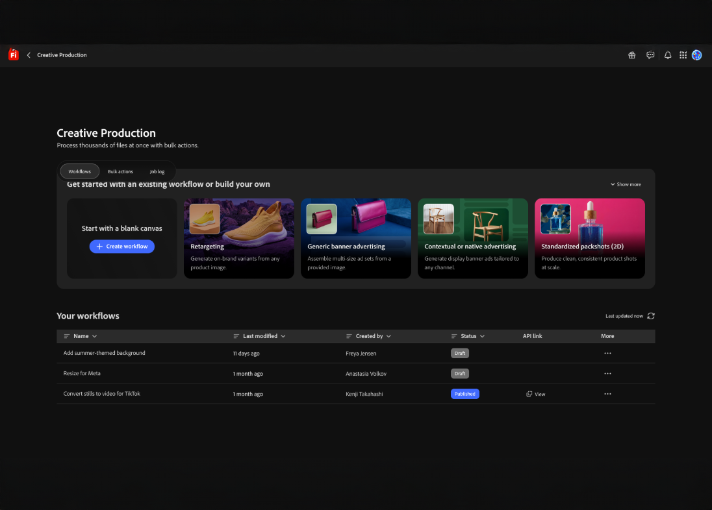
Brief Canvas synthesizing inputs and performance data.
- Brief-to-delivery in one surface — eliminates the handoff between strategy, creative, and production that clients complain about. Closest thing Adobe has to an agency-replacement workflow.
- Performance data grounds the brief — AI brief generation is informed by actual campaign outcomes, not vibes. Reduces "brief debt" drift that plagues creative ops.
- Agent assembles the stack — creative technologists don't hand-wire each step; production agent handles orchestration across Firefly, AEM Assets, Workfront.
Agency System of Record (GenStudio capability)
Agency System of Record
A GenStudio capability that preserves enterprise context as creative work moves across internal teams and external agencies — shared brand understanding, governance rules, approval chains, rights metadata, and accountability. Targets the brand-agency boundary where context is typically lost to email threads and PowerPoint briefs.
news.adobe.com/news/2026/04/adobe-introduces-brand-intelligence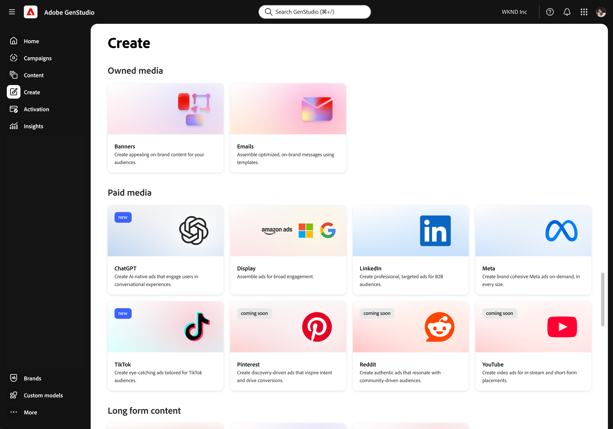
Agency System of Record — shared context across internal + external teams.
- Solves a real pain for in-house creative leaders — context loss at agency handoffs is a top-3 complaint. A shared SoR with governance baked in is credible.
- Opens agency-to-enterprise motion — agencies onboarding clients can plug directly into the brand corpus, shortening kickoff from weeks to days.
- Natural companion to Workfront + Brand Intelligence — acts as the shared context plane; upsells both.
Chapter 10
Creative Cloud & Firefly
3 features covered
Firefly AI Assistant
Firefly AI Assistant (natural-language creative agent)
A single conversational interface inside Firefly that interprets outcome-described prompts and orchestrates multi-step workflows across Photoshop, Premiere, Lightroom, Illustrator, and Express. Maintains cross-session context, learns preferences, ships with a Creative Skills library, and loops in Frame.io review feedback automatically. Supports third-party models including Anthropic Claude.
news.adobe.com/news/2026/04/adobe-new-creative-agent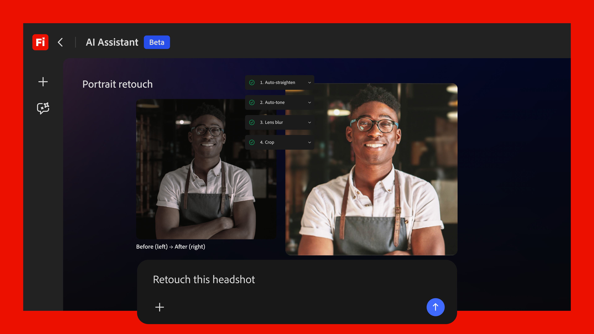
Firefly AI Assistant orchestrates tasks across Creative Cloud apps.
- Outcome-first creative UX — creators describe the result; the assistant handles app-switching and step sequencing. Net reduction in training hours for new creatives.
- Frame.io feedback loop — automatic application of review comments is a genuine productivity unlock for high-volume creative ops.
- Cross-app orchestration on CC native stack — no custom middleware needed to move assets between Photoshop/Premiere/Lightroom workflows.
Firefly Creative Production for Enterprise — Workflow Builder
Firefly Creative Production for Enterprise (Workflow Builder)
Enables creative technologists and developers to compose reusable end-to-end Firefly production workflows — chaining generative actions, asset transforms, and routing — and run batch production for approved-asset activation. The enterprise-facing counterpart to the consumer-feeling Firefly AI Assistant.
news.adobe.com/news/2026/04/adobe-introduces-brand-intelligence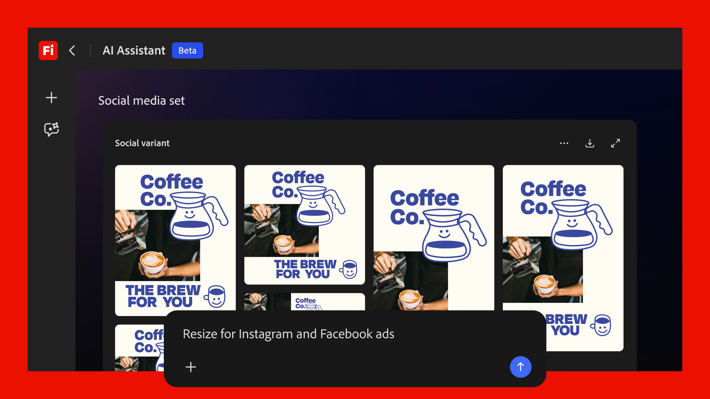
Workflow Builder composes reusable Firefly production pipelines.
- First-class creative technologist tooling — replaces the "hand-rolled Node scripts wired to Firefly APIs" pattern many enterprises are doing today. Faster TTM for production workflows.
- Batch scale for activation — approved-asset fan-out (localization, resize, variant generation) is the productivity line. Aligns tightly with GenStudio activation.
- Composable + reusable — workflows are versioned and shareable across teams, solving the one-off-script problem.
Firefly (Multi-Model Hub)
Firefly Multi-Model Hub (30+ models)
Firefly now hosts 30+ creative AI models — newly added Kling 3.0 and Kling 3.0 Omni, plus existing Google (Nano Banana 2, Veo 3.1), Runway Gen-4.5, Luma Ray3.14, Black Forest Labs FLUX.2[pro], ElevenLabs Multilingual v2, Topaz Astra, and Adobe's own Firefly models. One surface, many models, commercially-governed usage.
news.adobe.com/news/2026/04/adobe-new-creative-agent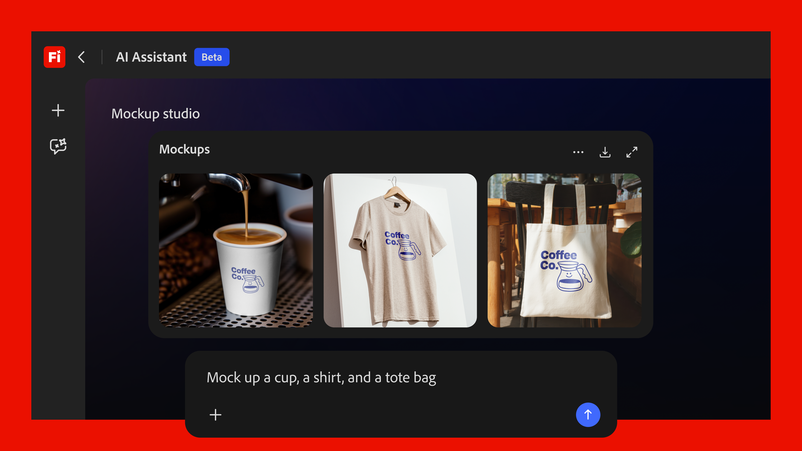
Firefly as a hub for 30+ third-party creative AI models.
- Single commercial surface across best-of-breed models — customers stop procuring/metering each model vendor independently.
- IP-safe governance — Adobe's commercial-use assurances extend across hosted models in contractual scope; reduces legal review drag vs. raw API access.
- Model-selection governance becomes a service line — which model for which job, cost-per-output, brand fidelity scoring.
Chapter 11
Sneaks
1 feature covered
Adobe Labs / Sneaks (research previews)
Sneaks 2026
Seven AI research projects previewed at Summit 2026 (none committed to roadmap; historically ~30–40% ship in some form): Face Off (audience-vote winner — synthetic-persona A/B simulation predicting which variant wins pre-launch); Concurrent (live-data-linked "living" design assets that auto-update on data change); Page Turner (on-the-fly personalized webpages assembled from user intent); Wise Wire (design-to-coded-personalized-HTML email generation); Test Kitchen (collaborative AI-assisted design with mood boards and brand assets); Asset Amplify (single asset set → channel/audience-segment variants); Tailored Takes (video localization/adaptation at scale from minimal base assets).
business.adobe.com/summit/2026/sessions/summit-sneaks-gs3.htmlSummit 2026 stage — Sneaks research showcase.
- Directional signal on Adobe roadmap — Sneaks reliably previews where agentic/creative AI is heading; useful for anchoring 12-24 month client planning.
- Concrete customer talking points — "Adobe is working on X" is useful in strategic conversations, even with no ship date.
- Face Off winner hints at next year's GenStudio — pre-launch creative simulation is the logical next step after automated tagging/optimization.
What to do Monday morning
Sell this, watch that
-
Sell: high-velocity POC scopes
CX Enterprise Coworker pilots (NVIDIA runtime angle for regulated verticals), AEM Agentic DAM migrations, Real-Time CDP unstructured-data onboarding, Commerce Agentic Checkout readiness.
-
Watch: services cannibalization risk
Migration Assessment Agent (25–40% of discovery SOWs), Commerce Developer Agent Suite (30–50% fixed-fee margin pressure), Agentic Authoring (custom component libraries), GenStudio Content Marketing (content-ops retainers).
-
Prerequisites that gate every sale
(1) AEP foundation, (2) identity/entity graph maturity, (3) documented brand guidelines for Brand Intelligence, (4) Preview access + credit budget for agent SKUs.
-
Pricing & timing clarity needed
credit-based agent pricing (get customer into the conversation early), GenStudio premium tier boundaries, AJO B2B Prime/Ultimate split, H2 2026 GA milestones on most differentiators.